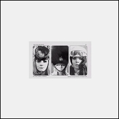

[1994 -
Viel Leicht - 008 - LP] |
Die Time Twisters,
Verdammt!
"Wo Ist Tom Wesselmann Jetzt?"
Not a TVPs
cover but a TVPs tribute (or at least very TVPs influenced) in may ways: the
title alludes to TVPs' "Where's Bill Grundy Now?", the song is a tribute to a
sixties pop-art painter, the lyrics are full of famous people's namesdropping
(Paul McCartney, Richard Hamilton, John Osborne, etc.) and the final lines say
"I know where Syd Barrett lives, by the edge of the wood. Whatever happened to
Thamesbeat and where's Bill Grundy now?". On the back of the sleeve TVP's "I
Still Believe in Magic" is quoted ("And I'm a sentimental fool, but what the
hell... I still believe in magic."). From the album Girls,
Gurus and Gitarren.
|